السلسلة 61
السيارة (صنف B) · 40 سؤال بالصوت. حاول تجاوب بوحدك، من بعد شوف الجواب.
السؤال 1
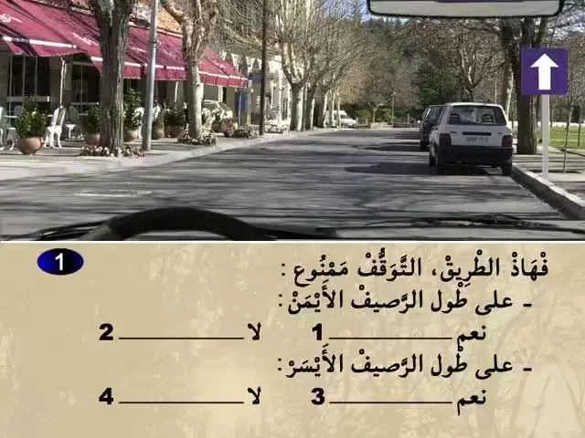
بيّن الجواب
الجواب الصحيح: 2 و 4
حنا فطريق ديال اتجاه واحد، فهذ النوع ديال الطرقان نقدر نوقف على اليمين ولا اليسار و ما كايناش علامة كتمنعني من التوقف.
السؤال 2
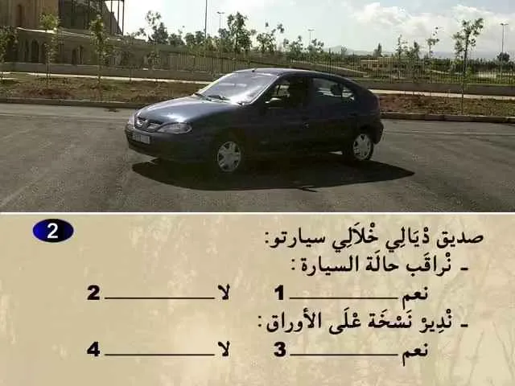
بيّن الجواب
الجواب الصحيح: 1 و 4
الحالة ديال الطوموبيل خاصها تبقى تحت المراقبة ديما، سواء كانت ديالك، ديال شي حد اخر، ولا كرا. الوراق الأصلية خاصها تكون معاك في حالة شي مراقبة طرقية من البوليس ولا الجمارك.
السؤال 3
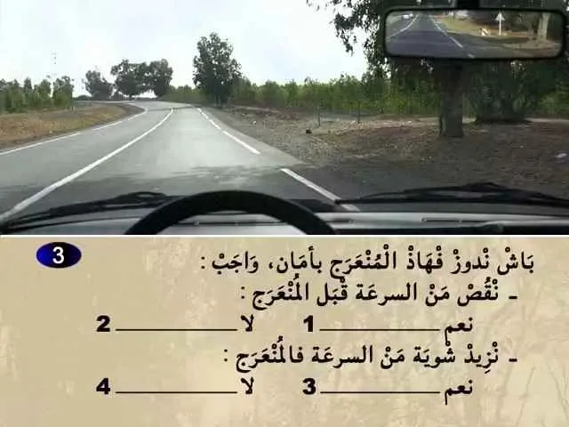
بيّن الجواب
الجواب الصحيح: 1 و 3
فالمنعرجات خاصك تنقص من السرعة قبل ما توصل، وفاش توصل للمنعرج تزيد شوية فالسرعة باش تدوز بسلام.
السؤال 4
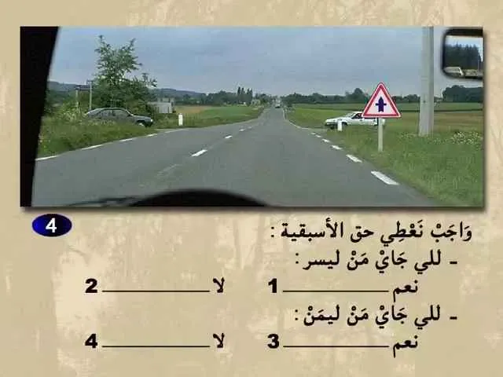
بيّن الجواب
الجواب الصحيح: 2 و 4
العلامة الطرقية كتقول عندك حق الأسبقية، بما أنك فطريق رئيسية، كدوز أنت الأول.
السؤال 5
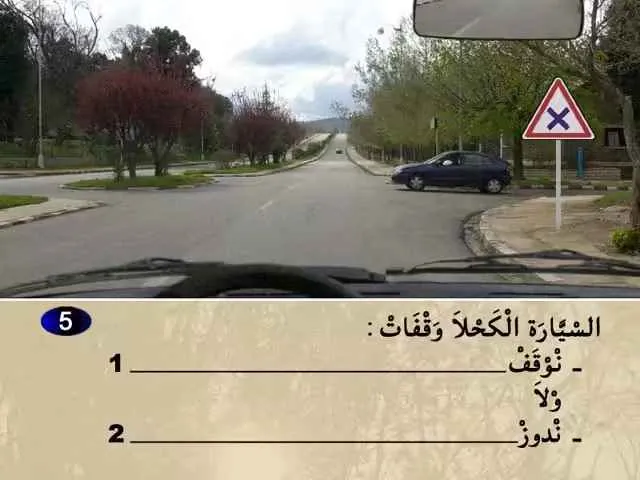
بيّن الجواب
الجواب الصحيح: 1
الطوموبيل الكحلة وقفات غير باش تتأكد من حالة الطريق، حيث حنا فملتقى الطرق خاص كل طوموبيل تنقص من السرعة وترد البال قبل ما تدوز. كاينة علامة ديال ملتقى الطرق والأسبقية للسيارات اللي جاية من اليمين، خاصني نوقف ونعطيها.
السؤال 6
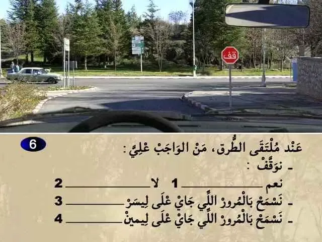
بيّن الجواب
الجواب الصحيح: 1 و 3 و 4
الوقوف إجباري عند علامة "قف"، والأسبقية فالملتقى للسيارات الجاية من اليمين ومن اليسار حتى هي.
السؤال 7
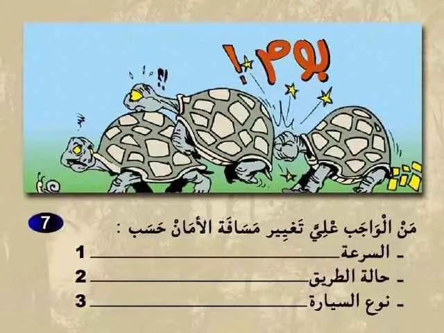
بيّن الجواب
الجواب الصحيح: 1 و 2
كلما كانت السرعة ديال الطوموبيل كبيرة، كتحتاج لمسافة أمان طويلة بينك وبين الطوموبيل اللي قدامك. حالة الطريق حتى هي سبب باش تزيد فمسافة الأمان، حيت إلى كاينة الشتا ولا الثلج خاصك تزيد فالمسافة، ونوع الطوموبيل ما عندوش علاقة.
السؤال 8
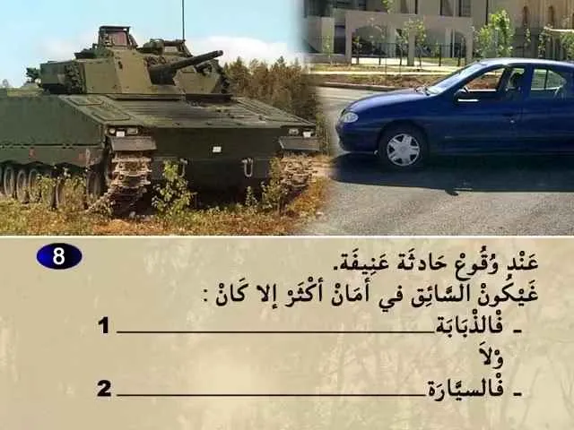
بيّن الجواب
الجواب الصحيح: 2
الطوموبيل فيها نظام أمان أكثر بحال الكيس الواقي (Airbag) وحزام السلامة. الجواب الصحيح هو الطوموبيل.
السؤال 9
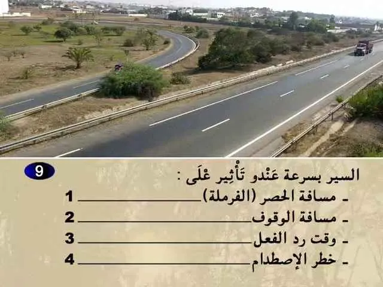
بيّن الجواب
الجواب الصحيح: 1 و 2 و 4
السرعة كتأثر على مسافة الفرملة، ومسافة الوقوف، وكلما كانت السرعة كبيرة تكون الحادثة أكثر خطورة. ولكن وقت رد الفعل ما عندوش علاقة بالسرعة.
السؤال 10
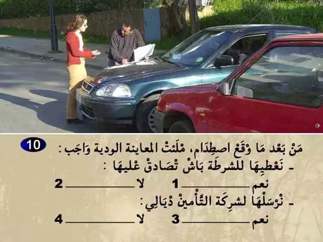
بيّن الجواب
الجواب الصحيح: 2 و 3
إذا وقعت حادثة والخسائر كانت مادية فقط، كنديرو معاينة ودية وما خاصاش تصادق عليها البوليس، خاصك تبعتها لشركة التأمين قبل 5 أيام.
السؤال 11
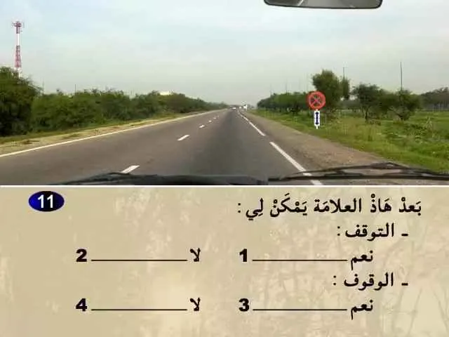
بيّن الجواب
الجواب الصحيح: 2 و 4
العلامة الطرقية كتقول ممنوع الوقوف والتوقف، وفيها علامة إضافية بزوج ديال السهام اللي كتعني على طول الطريق.
السؤال 12
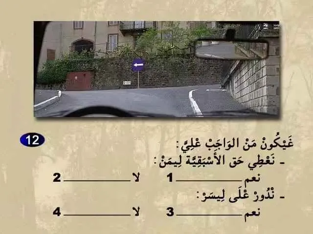
بيّن الجواب
الجواب الصحيح: 1 و 3
فالملتقى الأسبقية ديما للعربات الجاية من اليمين، وعلامة الطرقية كتقول خاص تغيير الاتجاه لليسار.
السؤال 13
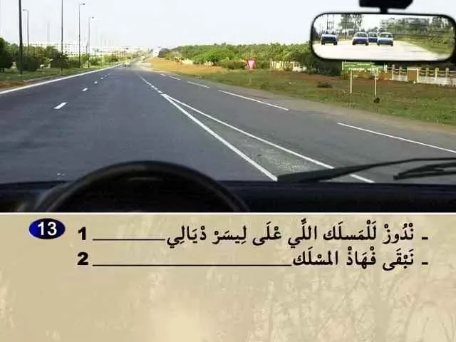
بيّن الجواب
الجواب الصحيح: 2
المسلك اللي على اليسار خاص بالتجاوز، والمسلك اللي على اليمين خاص بالعربات اللي بغات تندمج. أنا فالمسلك الصحيح وكنبقى فيه.
السؤال 14
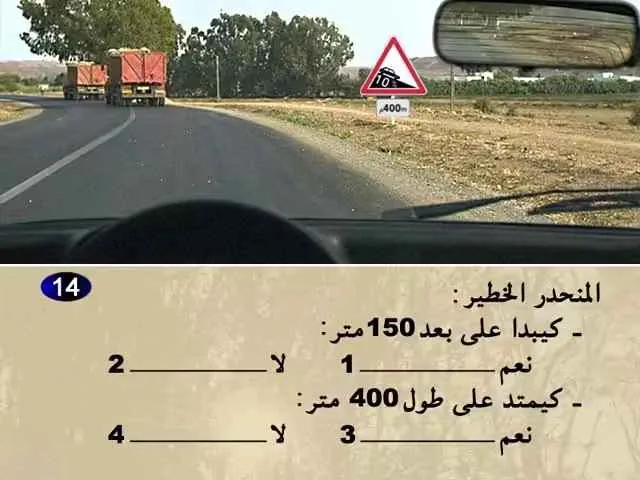
بيّن الجواب
الجواب الصحيح: 2 و 4
العلامة الطرقية كتقول الخطر، ولكن في هذ الحالة كاينة علامة إضافية ديال 400 متر، يعني المنحدر بعد 400 متر.
السؤال 15
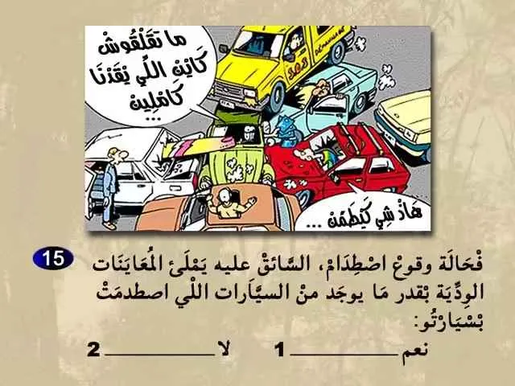
بيّن الجواب
الجواب الصحيح: 1
أي طوموبيل صدماتك خاصك تملأ معاينة ودية معها. مثلا إذا صدماتك جوج سيارات خاصك تملأ جوج معاينات ودية.
السؤال 16
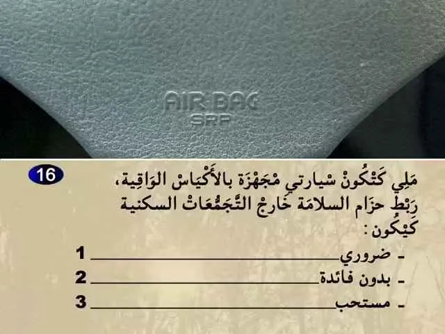
بيّن الجواب
الجواب الصحيح: 1
الكيس الواقي (Airbag) كيقلل غير من خطر الاصطدام، حزام السلامة ضروري حتى مع وجود الكيس الواقي.
السؤال 17
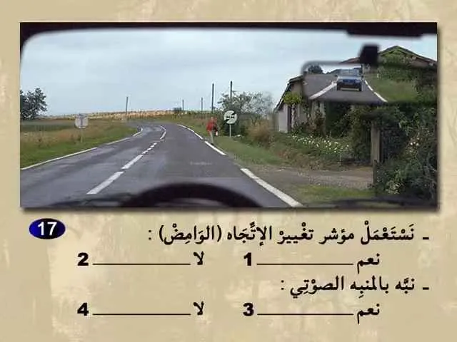
بيّن الجواب
الجواب الصحيح: 1 و 4
غادي نحيد شوية لليسار حيت كاين راجل جاي، نستعمل مؤشر تغيير الاتجاه حيت كاينة طوموبيل من الخلف وما كاينش خطر باش ننبه بالمنبه الصوتي.
السؤال 18
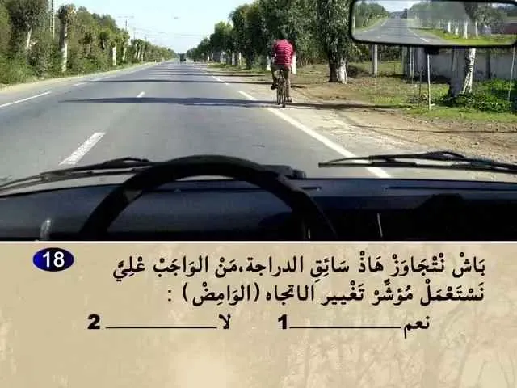
بيّن الجواب
الجواب الصحيح: 1
ديما خاصك تستعمل مؤشر تغيير الاتجاه فاش تبغي تتجاوز ولا تنحاز.
السؤال 19
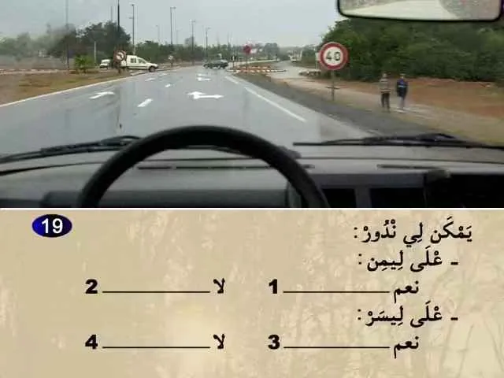
بيّن الجواب
الجواب الصحيح: 1 و 4
خاصك ديما تلاحظ العلامات الطرقية، مثلا السرعة محددة فـ 40 كلم في الساعة وعلامة ممنوع تغيير الاتجاه لليسار، والتشوير الأفقي كيجبرك على السير مباشرة.
السؤال 20
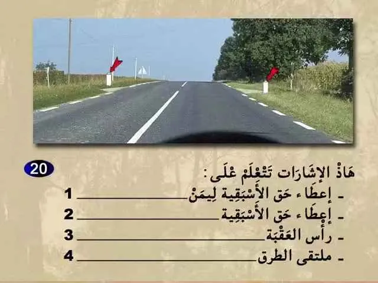
بيّن الجواب
الجواب الصحيح: 4
الإشارات الطرقية فالصورة كتشير لملتقى الطرق.
السؤال 21
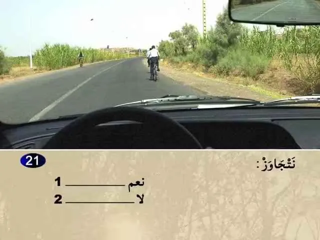
بيّن الجواب
الجواب الصحيح: 2
كاين منعرج وخط متصل كيمنع التجاوز، يعني ما يمكنش نتجاوز فهذ الحالة.
السؤال 22
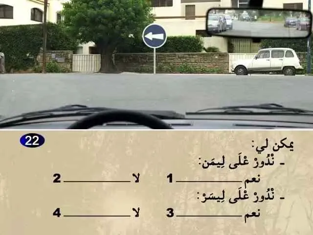
بيّن الجواب
الجواب الصحيح: 2 و 3
العلامة الطرقية كتقول تغيير الاتجاه لليسار إجباري، يعني ما يمكنش نغير الاتجاه لليمين.
السؤال 23
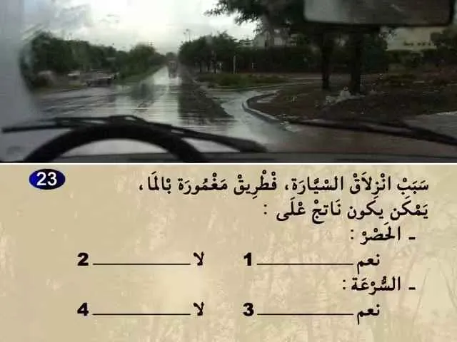
بيّن الجواب
الجواب الصحيح: 2 و 3
الانزلاق ما عندوش علاقة بالفرامل، كيكون سببه السرعة، العجلات، ولا حالة الطريق.
السؤال 24
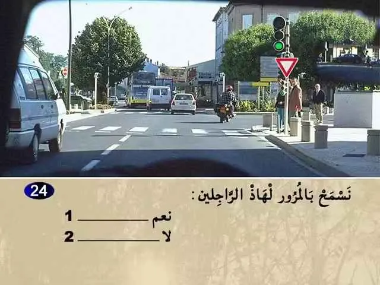
بيّن الجواب
الجواب الصحيح: 2
إذا كاينة إشارة ضوئية كتلغي الإشارات الطرقية الأخرى، فالضوء الأخضر كيحق لي نمر، والراجلين خاصهم ينتظرو.
السؤال 25
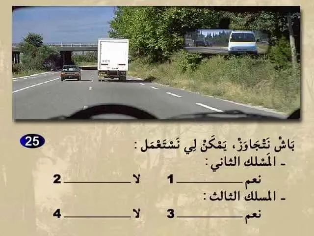
بيّن الجواب
الجواب الصحيح: 1 و 4
3 مسالك، المسلك الأول للسير العادي، الثاني للتجاوز، والثالث ما يمكنش نستعمله حيت فيه خط متصل.
السؤال 26
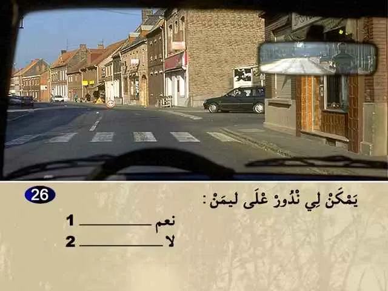
بيّن الجواب
الجواب الصحيح: 1
نحن فملتقى الطرق، إذا بغيت نغير الاتجاه لليمين نقدر ندوز حيت الخط المتصل غير فوسط الطريق.
السؤال 27
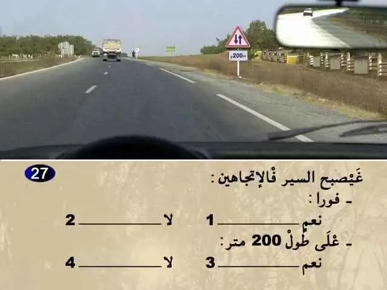
بيّن الجواب
الجواب الصحيح: 2 و 4
علامة الخطر تطبق من عند العلامة ولكن إذا كاينة علامة إضافية بحال 200 متر، يعني السير في الاتجاهين بعد 200 متر.
السؤال 28
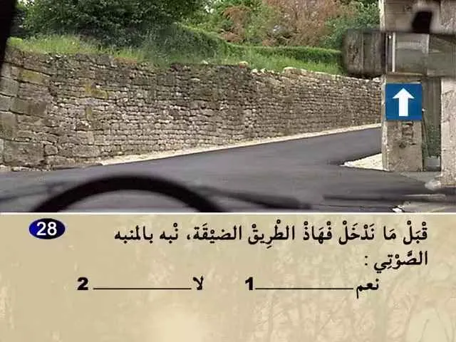
بيّن الجواب
الجواب الصحيح: 2
ما خاصنيش ننبه بالمنبه الصوتي حيت الطريق ذات اتجاه واحد.
السؤال 29
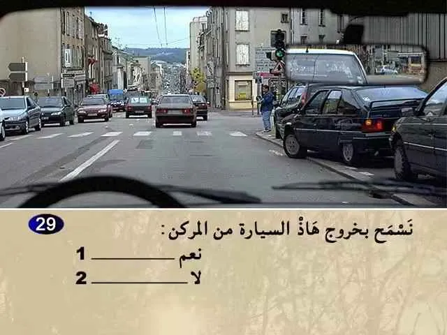
بيّن الجواب
الجواب الصحيح: 2
بعض الحالات يمكن التساهل، ولكن إذا كاينة سيارة بغات تندمج وما زال ما اندمجت خاصها تنتظر.
السؤال 30
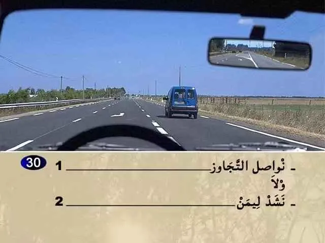
بيّن الجواب
الجواب الصحيح: 1
الإشارات الأفقية كتهم السيارات الجاية من الاتجاه المعاكس، والخط المتقطع كيسمح لي بالتجاوز.
السؤال 31
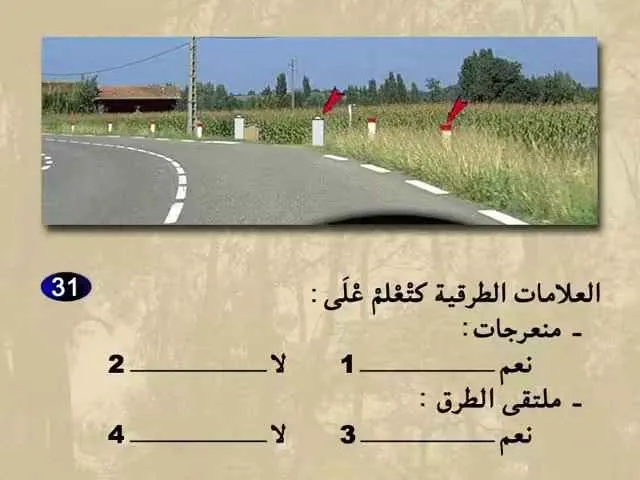
بيّن الجواب
الجواب الصحيح: 1 و 3
العلامات الطرقية اللي فيها اللون الأحمر كتقول منعرج، واللي ما فيهاش كتقول ملتقى الطرق.
السؤال 32
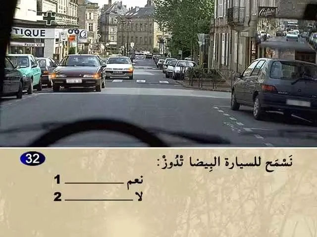
بيّن الجواب
الجواب الصحيح: 2
نحن فملتقى الطرق، عندي حق الأسبقية حيت طريقي خاوية والسيارة البيضاء خاصها تنتظر حتى تمر.
السؤال 33
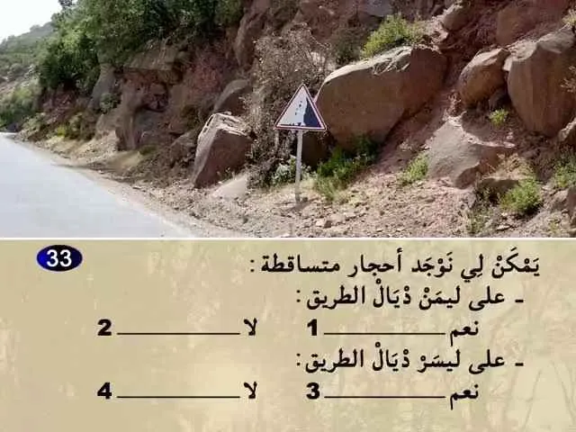
بيّن الجواب
الجواب الصحيح: 1 و 3
العلامة الطرقية كتقول الخطر، من اليمين واليسار بحال سقوط الأحجار ولا هبوب الرياح.
السؤال 34
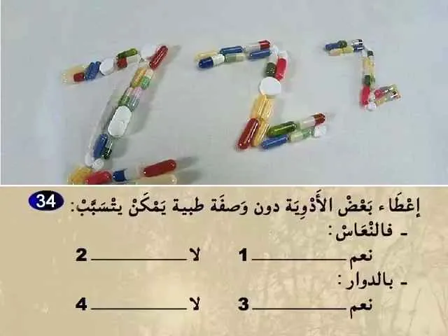
بيّن الجواب
الجواب الصحيح: 1 و 3
بعض الأدوية كتأثر على السائق وتجعله يشعر بالنوم أو الدوار، خاص الإنتباه.
السؤال 35
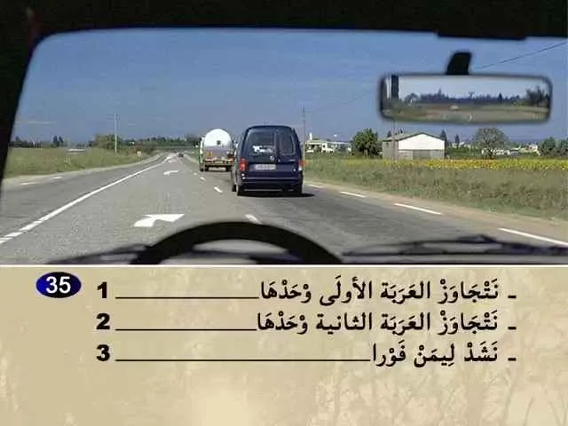
بيّن الجواب
الجواب الصحيح: 3
الإشارات الأفقية كتعني الإنحياز والخط المتصل كيعني ممنوع التجاوز.
السؤال 36
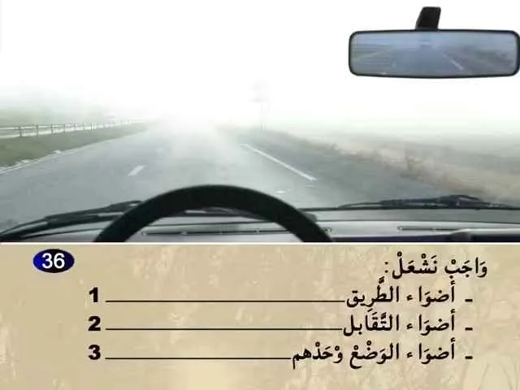
بيّن الجواب
الجواب الصحيح: 2
فحالة الضباب خاصك تشعل أضواء الضباب والأضواء الأمامية والخلفية.
السؤال 37
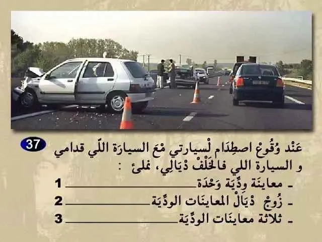
بيّن الجواب
الجواب الصحيح: 2
أي طوموبيل صدماتك خاصك تملأ معاينة ودية معها، فهذ الحالة إذا صدماتك جوج سيارات تملأ جوج معاينات ودية.
السؤال 38
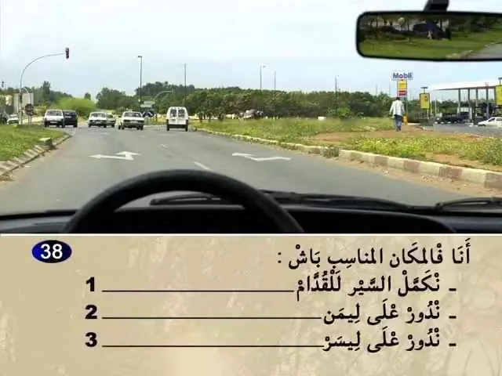
بيّن الجواب
الجواب الصحيح: 1 و 3
التشوير الأفقي كيعني الإجبار، والسهام كتجبرك على تغيير الاتجاه لليسار أو السير مباشرة.
السؤال 39
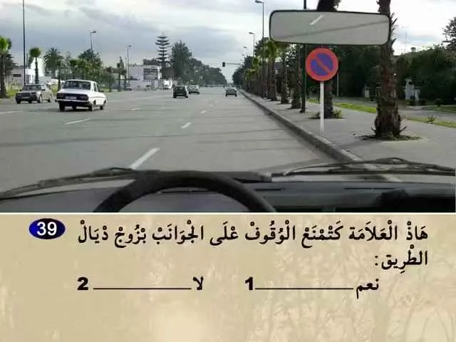
بيّن الجواب
الجواب الصحيح: 2
العلامة كتقول الوقوف فهذ الطريق اللي أنا فيه.
السؤال 40
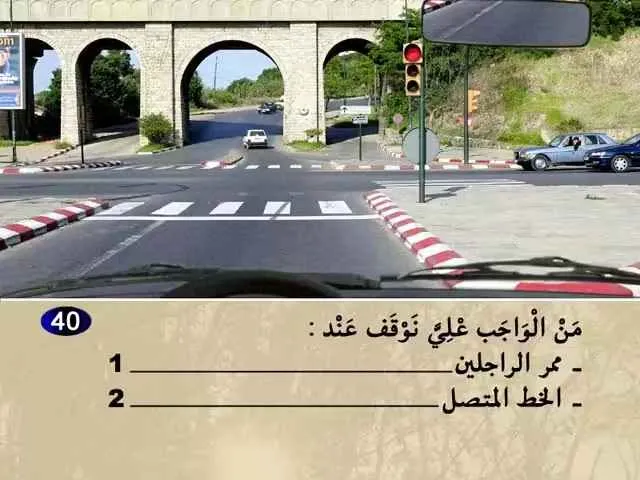
بيّن الجواب
الجواب الصحيح: 2
ممنوع الوقوف فوق ممر الراجلين، وخاصني نوقف عند الخط المتصل باش ندوزو الراجلين.